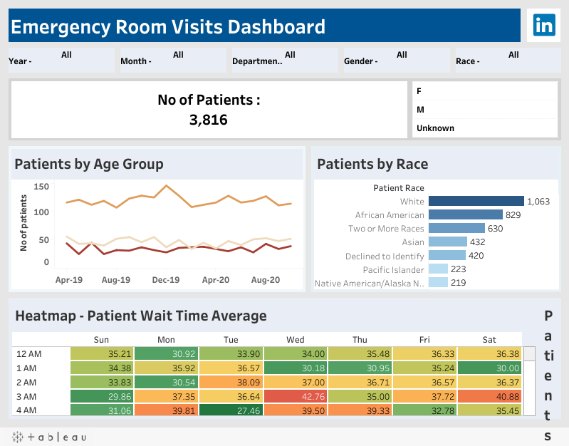
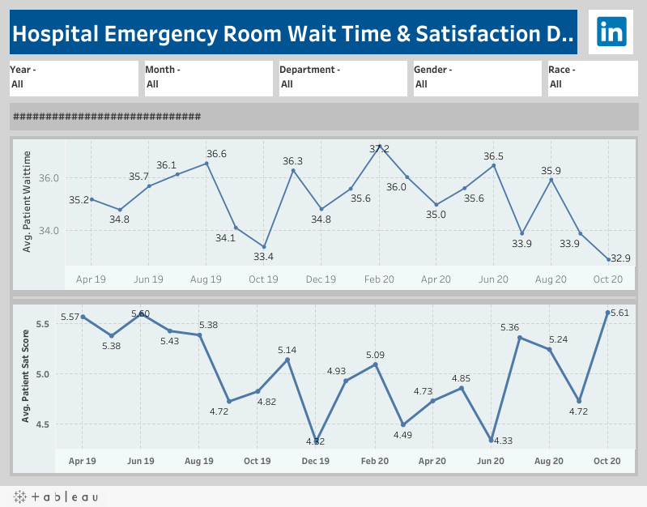
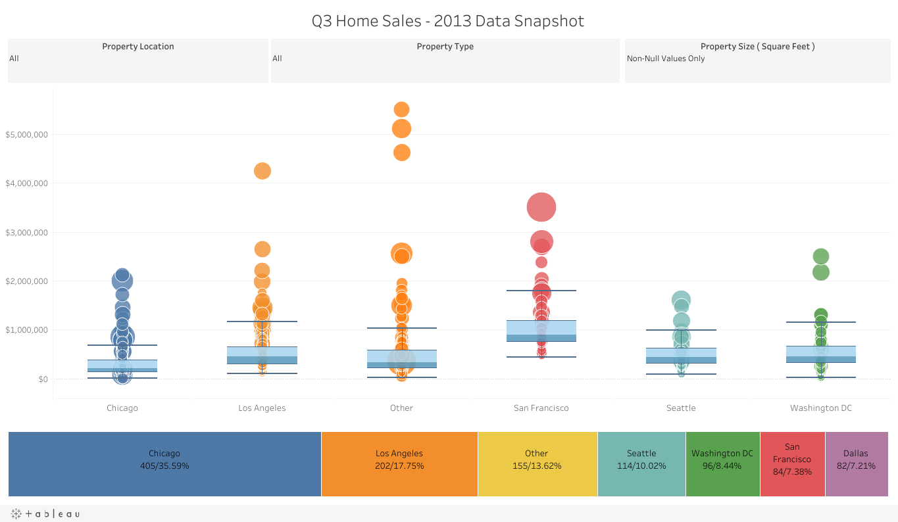
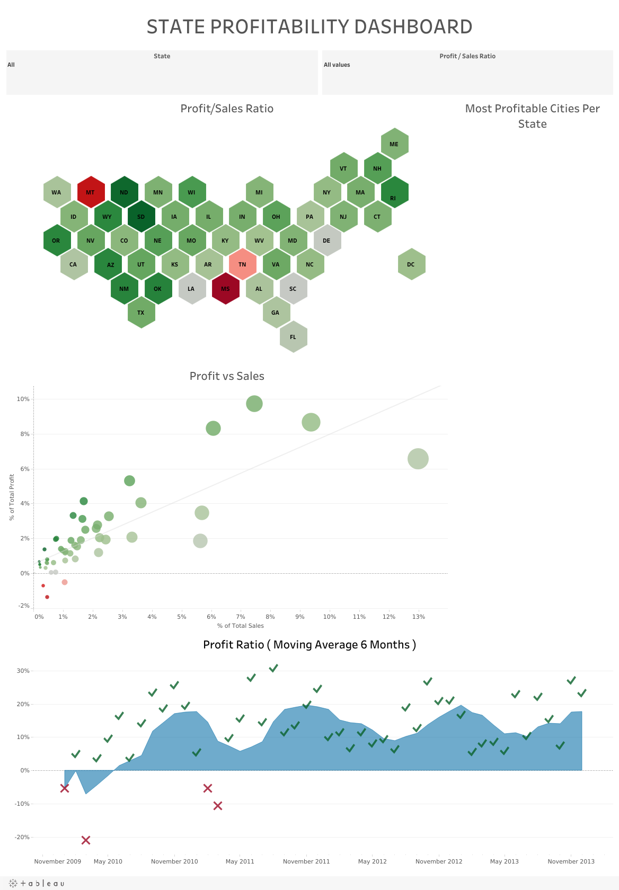
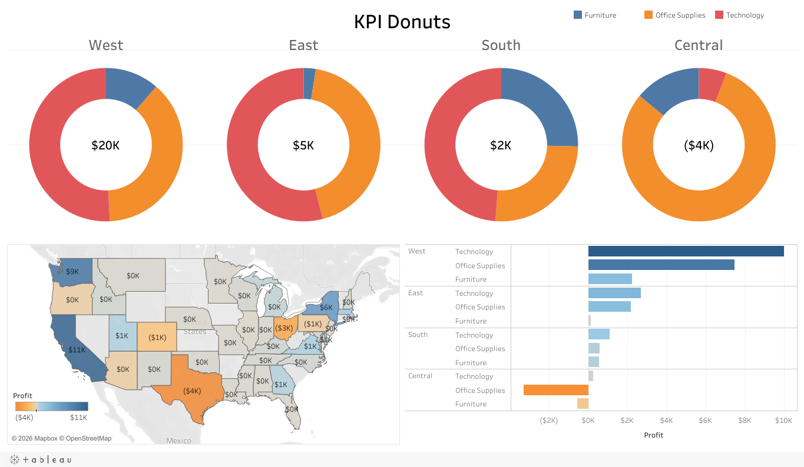
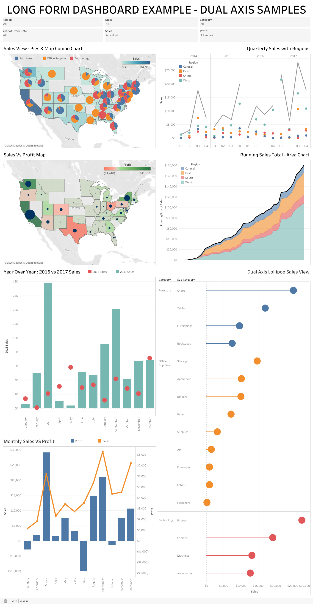
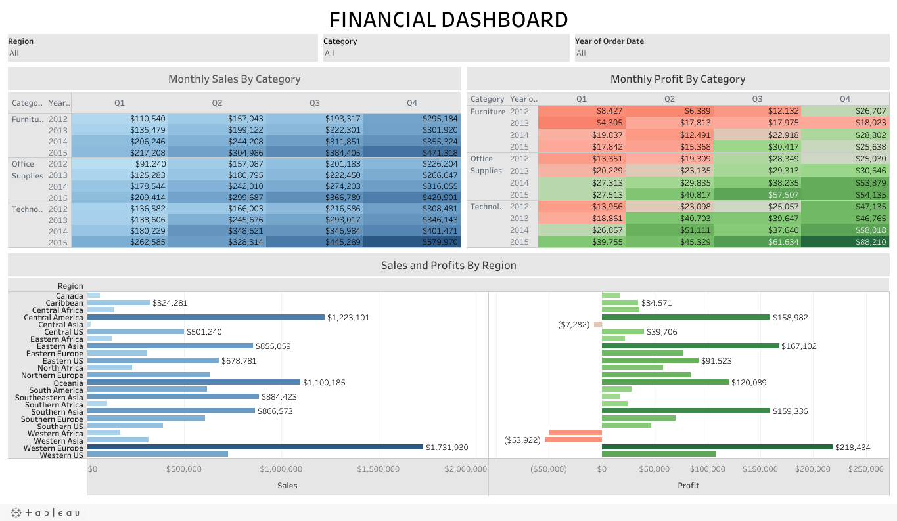
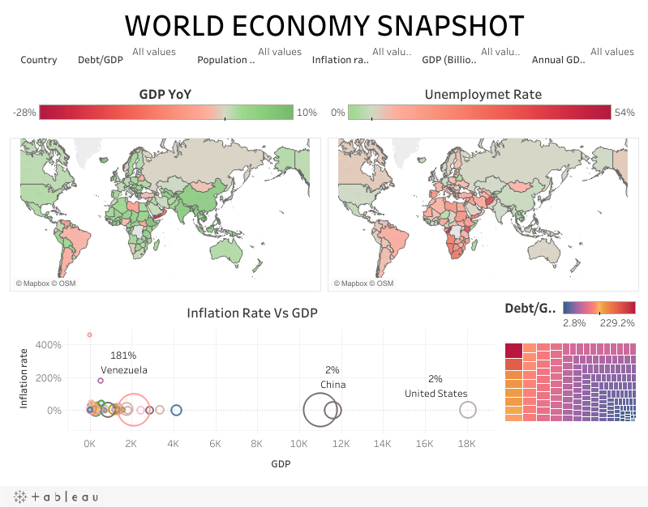
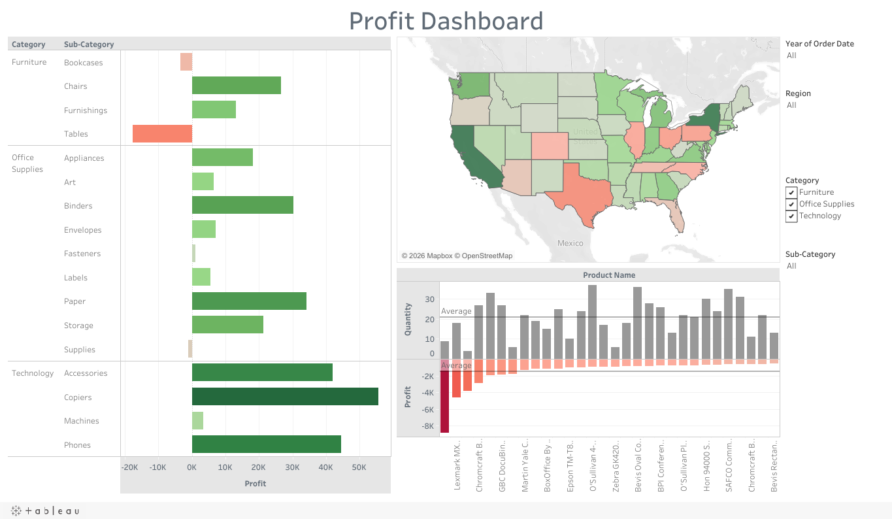

Healthcare Tableau
Emergency Room Visits Dashboard
Patient volume, demographics, and wait-time patterns in an emergency room dashboard.
Explore dashboardTEMPE, ARIZONA / DATA & BUSINESS ANALYTICS
I turn complex data into clear insights—and build the dashboards and workflows that help teams act on them.
My work sits at the intersection of data analytics, business operations, and stakeholder collaboration.
At First Solar, I supported Global Sales Operations with Tableau dashboards, Salesforce reporting, data validation, and cross-functional analysis. At Central Arizona College, I worked on institutional research, federal reporting, student success KPIs, and admissions process automation.
I start by understanding the question, check the quality of the underlying data, and build reporting that makes the result easy to understand and use.
Public portfolio and practice work spanning healthcare, finance, real estate, and economic indicators. Open any preview to explore the interactive workbook.

Patient volume, demographics, and wait-time patterns in an emergency room dashboard.
Explore dashboard
Monthly trends in emergency room wait times and patient satisfaction, with demographic filters.
Explore dashboard
A Q3 2013 home sales snapshot comparing property prices and distributions across cities.
Explore dashboard
State-level profitability, the relationship between profit and sales, and profit-ratio trends.
Explore dashboard
Regional profit comparisons using donut charts, a map, and category breakdowns.
Explore dashboard
A collection of dual-axis chart examples in a long-form Tableau layout.
Explore dashboard
Sales and profit by category, month, and region, combining tables and comparative charts.
Explore dashboard
A global snapshot of GDP growth, unemployment, inflation, and debt-to-GDP measures.
Explore dashboard
A public workbook exploring profit across product categories, locations, and filters.
Explore dashboard
An annual profit dashboard combining category comparisons, a state map, and product-level detail.
Explore dashboardAnalytics and reporting across higher education, global sales operations, and business systems.
Data Analyst · Institutional Planning & Research
Analyst – Data Analytics I · Global Sales Operations
Business Analyst
Developer Analyst
Examples from my professional experience. These summaries describe the work without publishing employer data.
Developed reporting to help teams understand forward-looking demand and supply, shipment activity, and booking performance.
Purpose: bring sales and operations teams to a shared view of performance.
Analyzed scholarship recipients and subsequent CAC enrollment, connecting student outcomes with high-school-level trends.
Purpose: support scholarship planning and student success decisions.
Used Microsoft Forms and Power Automate to collect complete requests and deliver structured information to admissions staff.
Purpose: reduce manual steps and improve request consistency.
SQL · Python (pandas, NumPy, Matplotlib) · Excel · Tableau Desktop · Tableau Server · Salesforce reporting · ZogoTech · Power BI
Requirements gathering · KPI definition · Stakeholder collaboration · Root cause analysis · Data validation · Documentation
Microsoft Forms · Power Automate · SurveyMonkey · Agile · Scrum · SDLC · ChatGPT · Claude
Executive MBA
Information Technology
GPA: 3.7
Surprise, ArizonaMaster of Science
Information Systems
GPA: 4.0
New York, New YorkBachelor of Engineering
Computer Engineering
Colleagues and leaders share how my work strengthens reporting, improves processes, and supports better decisions. Explore seven professional recommendations and three letters of recommendation.
August 2, 2026
Translated stakeholder goals into meaningful Early College insights, helping the team shape an action plan to improve student success.
Read full recommendationJune 4, 2021
Delivered reliable reporting under demanding deadlines, clarified undocumented systems, and resolved issues with attention to preventing recurring errors.
Read full recommendationJune 2, 2021
Brought colleagues’ ideas to life through Tableau expertise, responsive collaboration, and practical reporting solutions.
Read full recommendationJune 2, 2021
Introduced fresh analytical ideas and refined visualizations through collaboration, thoughtful questions, and a clear understanding of the business.
Read full recommendationApril 29, 2021
Developed widely used Salesforce reports and Tableau dashboards, identified reporting issues, and supported cross-functional teams with strong analytical and organizational skills.
Read full recommendationApril 24, 2021
Transformed a critical forecasting process from Excel VBA into Tableau, delivering an innovative interface that expanded the team’s analytical capabilities.
Read full recommendationJune 23, 2018
Combined attentive client communication with user-friendly website development, contributing to program improvements and earning strong recognition as a teammate.
Read full recommendationJuly 8, 2025
Designed structured registration and program-change workflows that reduced manual effort, improved record accuracy, and strengthened the student service experience.
Read letter of recommendationMarch 19, 2021
Recognized for understanding stakeholder needs, delivering clear reports on schedule, and demonstrating integrity, commitment, and a drive for continued growth.
Read letter of recommendationMarch 17, 2021
Endorsed for graduate study based on demonstrated analytical expertise, professionalism, leadership potential, and an innovative approach to solving problems.
Read letter of recommendationBased in Tempe, Arizona. Interested in opportunities in data analytics, business analysis, and business intelligence.
swapnilnarsale45@gmail.com